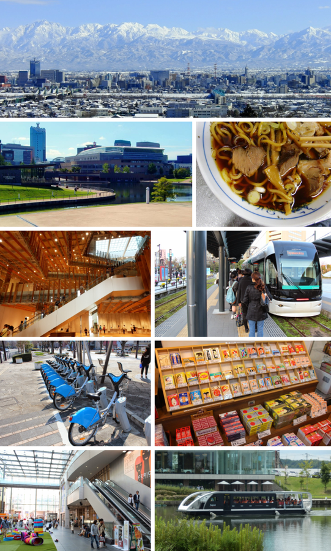
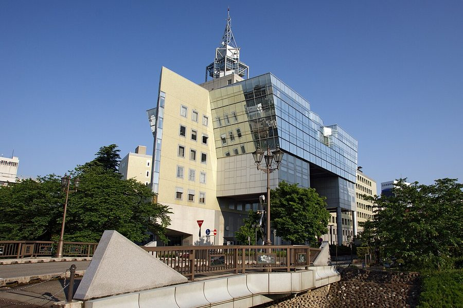
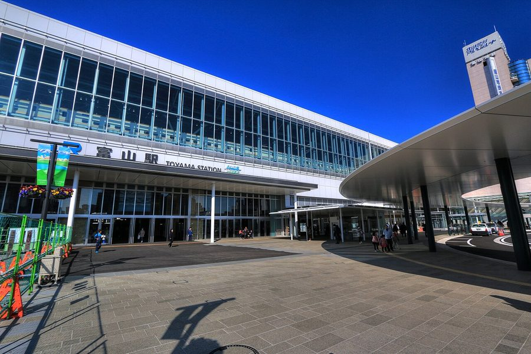
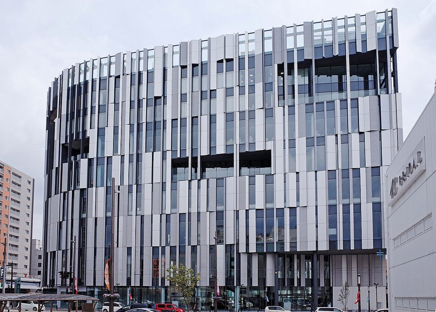

富山県富山市のソフトクリーム・ジェラート・かき氷（22件）
寄り道スポット検索アプリ「ヨッテコ」の収録データから、富山県富山市のソフトクリーム・ジェラート・かき氷を営業時間・料金つきで一覧にしました（2026年8月時点）。
最も遅くまで開いているのはアイスタベタイ/DONUT TABETAI（24:00まで）。
富山県富山市はどんなまち？
数字で見る🔍富山県富山市
401,436人
人口（住民基本台帳・2026年1月1日）
1,241.71km²
面積
まちの横顔




- 地形と気候: 2005年に7市町村の合併で発足した現在の市域は、都道府県庁所在地では全国2番目に広い1,241.70km²を持ち、富山県の29.23%を占めています。水深約3,000メートルの富山深海長谷から標高2,986メートルの水晶岳まで、変化に富んだ地形が広がります。気候は温暖湿潤気候（Cfa）に属し、市の全域が豪雪地帯に指定されています。
- 観光: 市内の多くは立山黒部ジオパークに、南東部は中部山岳国立公園に指定されています。ホタルイカやライチョウ（雷鳥）などが観光資源となっており、ホタルイカが水揚げされる富山市から魚津市にかけての富山湾沿岸は、特別天然記念物に指定されています。
- 特産と文化: 2005年の合併により、「越中富山の薬売り」で知られ「薬都」とも呼ばれた富山城の城下町、浄土真宗の古刹聞名寺の門前町、立山信仰の登山者たちの宿場町など、多様な地域がひとつの市に包含されました。
寄り道充実度（全国偏差値）
偏差値・順位は、ヨッテコ収録データ（2026年8月時点・26,033件）を市区町村別に集計した施設数の全国分布（1,728市区町村）から毎回算出しています。カードを押すとカテゴリ別の分析に切り替わります。
アイスから見た富山県富山市
市内のアイスのお店は22件、全国32位タイ（上位1.9%）。——食べ比べができるだけの店数がある。
22件
アイスが食べられるお店（全国32位タイ・上位1.9%）
64偏差値
アイス充実度
59%
アイスクリームを出す店の割合（全国39%）
- かき氷の扱いは23%。全国の16%を1.4倍上回ります。温暖湿潤気候に属しながら、市の全域が豪雪地帯に指定されている市。23%という数字は、氷が脇役ではないことを示しています。
- 59%の店がアイスクリームを扱います。全国水準は39%です。立山黒部ジオパークや中部山岳国立公園に指定される山々とホタルイカで知られる富山湾に囲まれる市。ソフトだけでなく、カップやコーンのアイスまで選べる品ぞろえです。
- ジェラートを出す店は9%で、全国水準（14%）を下回ります。品ぞろえの軸は、別のところにあります。
出典: 施設データ=ヨッテコ収録データ（26,033件・2026年8月時点）。偏差値・全国順位・全国水準は全1,728市区町村の分布から毎回算出。 / 人口=総務省「住民基本台帳に基づく人口、人口動態及び世帯数」（2026年1月1日現在） / 面積=国土地理院「全国都道府県市区町村別面積調」（2026年4月1日時点） / まちの解説=日本語版Wikipedia「富山市」（https://ja.wikipedia.org/wiki/富山市、2026年8月21日取得、CC BY-SA 4.0） / 写真=Wikimedia Commons（各キャプションに作者・ライセンスを記載）
曜日別の営業施設数
| 月 | 火 | 水 | 木 | 金 | 土 | 日 |
|---|---|---|---|---|---|---|
| 15 | 18 | 16 | 19 | 20 | 20 | 20 |
月曜日が最も休みが多く（各6件が定休）、年中無休は9件です。※営業時間データのある21件で集計
施設一覧
| 施設 | 営業時間 |
|---|---|
| AND LIFE (アンドライフ) ソフト | 10:00〜19:00（月休） |
| CHILLOUT &ソフトクリーム畑 富山本店 ソフトアイス 富山市がアイスクリーム年間支出額全国1位となったことで注目を集める。チルアウト＆ソフトクリーム畑にてソフトクリームを提供… | 12:00〜18:00 ※曜日により異なる |
| Humming Bird Bean to Bar Chocolate TOYAMA アイス | 13:30〜17:00 ※曜日により異なる |
| Popup Cream アイス | 11:00〜17:00（水・木休） |
| Pâtisserie CLOTHO ソフト | 10:00〜18:00 ※曜日により異なる |
| いも屋 ソフトかき氷 | 11:00〜17:00 |
| かける アイス | 10:30〜19:00 ※曜日により異なる |
| やいろ ソフトアイス | — |
| アイスタベタイ/DONUT TABETAI アイス | 11:00〜24:00（月・水休） |
| カフェ＆雑貨moohno ソフト | 11:00〜17:00 ※曜日により異なる |
| サブカルチャー アイス | 14:00〜22:00 ※曜日により異なる |
| フェルヴェール 富山駅店 ソフト セイアグリー健康卵を使用したシフォンケーキやプリンなどの卵料理を提供する店舗。添加物・保存料無使用を徹底し、ソフトクリー… | 09:00〜20:00 |
| マイスイーツパーラー【低糖質スイーツ専門店】 ジェラート | 11:00〜18:00（月・日休） |
| ヤマカワ大泉店 かき氷アイス | 10:00〜19:00 |
| 四季庵 ソフト | 10:00〜16:00（火・土休） |
| 地場もん屋 総本店 ソフトジェラート 富山県の野菜産出額向上と地産地消を目的に設立された富山市農林産物アンテナショップ。世界でここだけのカウヒーソフトを2サイ… | 10:00〜18:30 |
| 山川いもや本店 かき氷アイス | 10:00〜18:30 |
| 山川山室店 かき氷アイス | 10:00〜19:00 |
| 平野屋 ソフトかき氷アイス | 10:00〜19:00（水休） |
| 栗林園 アイス | 09:00〜19:00 |
| 田村農園たまご園 ソフトアイス たまご直売所「田村農園たまご園」の名物。卵1個をまるごと使った濃厚な卵黄のコクが特徴のソフトクリーム。 | 09:00〜18:00 |
| 青山茶舗 ソフト | 10:00〜18:00 |
現在地から近い順に探すなら、地図アプリ「ヨッテコ」
全国26,000件の温泉・道の駅・アイスのお店を登録不要で検索。到着時刻に営業しているかの目安も表示します。